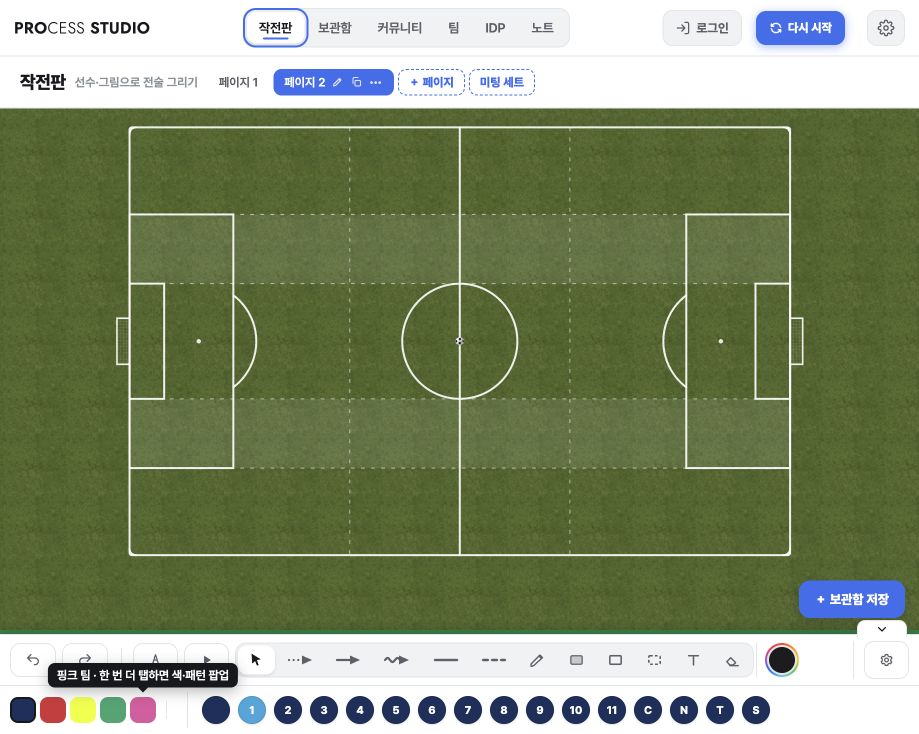
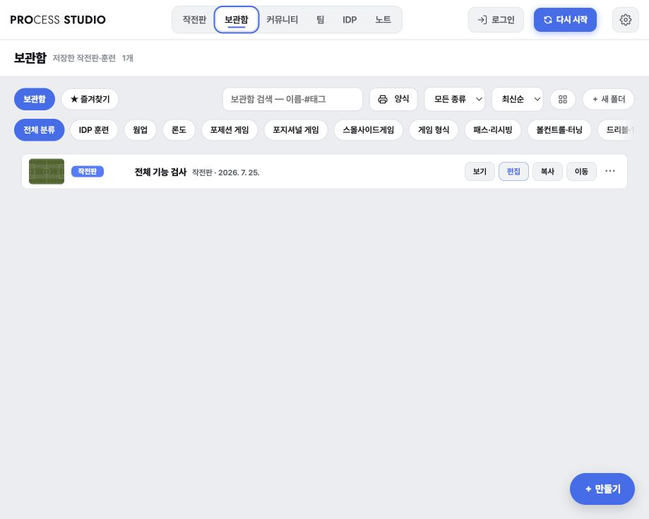
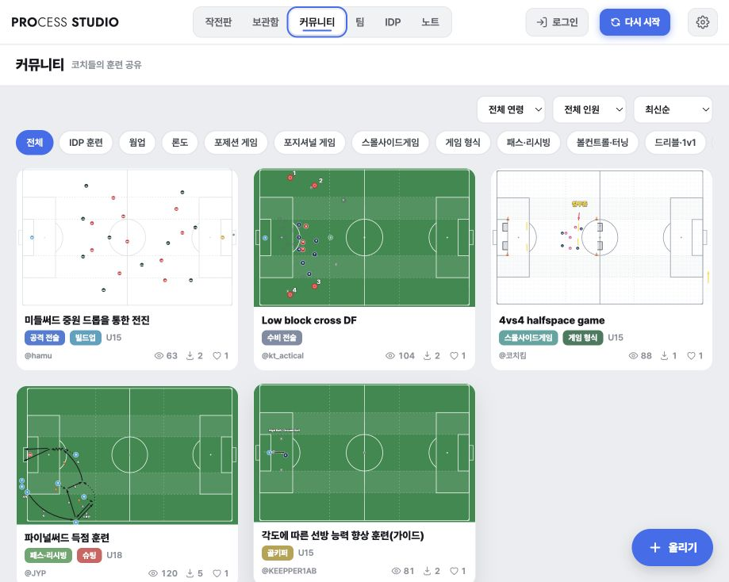
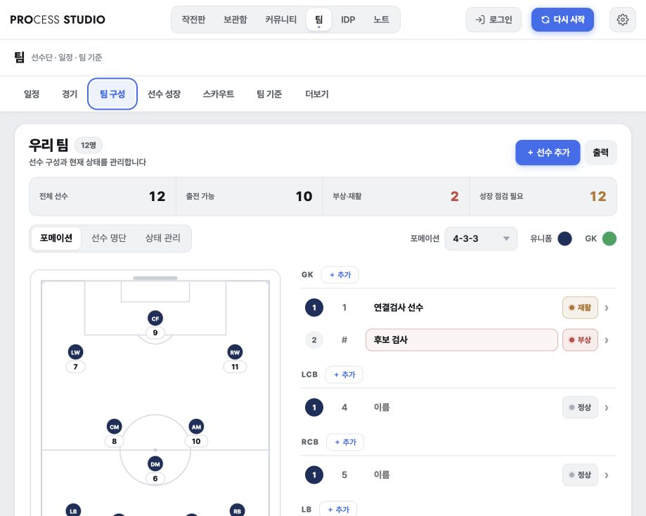
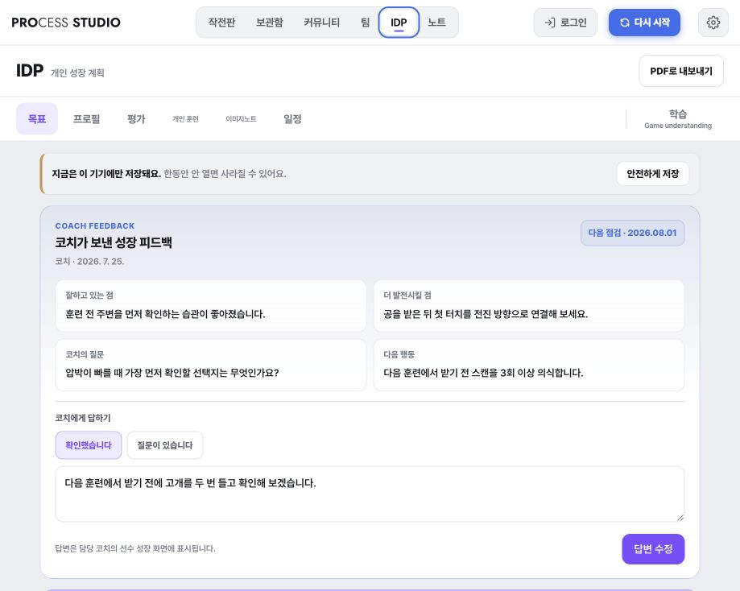

코치의 생각을 작전판으로 만들고, 훈련·경기·선수 성장까지 연결합니다.

선수·볼·장비를 배치하고 동선을 그려 여러 장면의 움직임을 애니메이션으로 전달합니다.
작전판과 훈련을 보관함에 저장하고 카테고리·연령·인원·태그로 빠르게 다시 찾습니다.

움직이는 훈련 자료를 공유하고, 다른 코치의 아이디어를 내 보관함에 담아 팀에 맞게 발전시킵니다.

포메이션과 뎁스차트, 선수 상태, 경기 준비와 리뷰를 연결해 팀 운영의 흐름을 놓치지 않습니다.

선수의 자기평가를 코치가 확인하고, 경기 근거와 다음 행동을 담은 피드백을 해당 선수에게 전달합니다.

현장에서 반복되는 코칭 업무가 다음 단계로 자연스럽게 이어집니다.
현장의 피드백으로 더 쉽고, 더 구체적인 코칭 환경을 만들어갑니다.